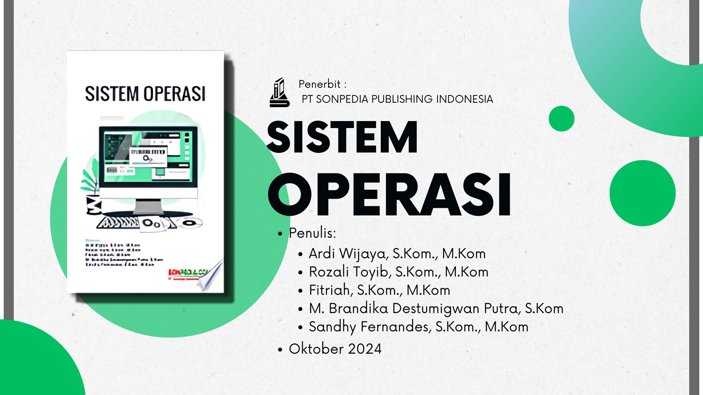
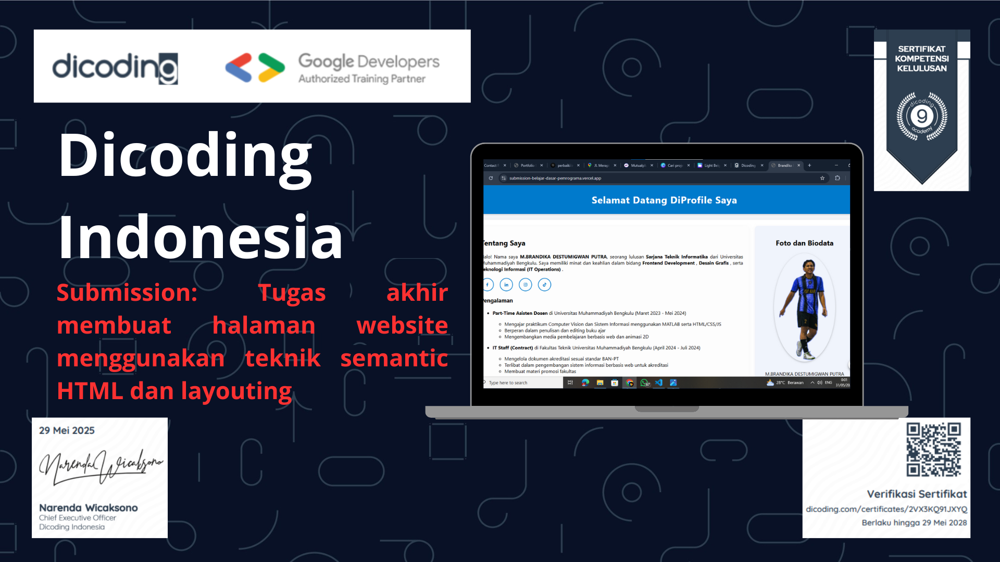
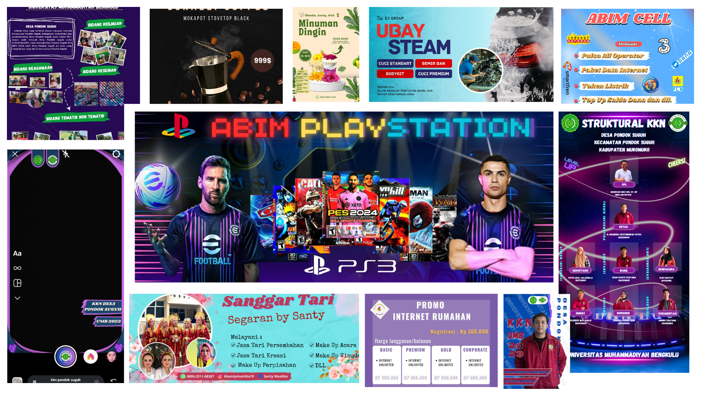

Halo! Saya Brandika Destu
Seorang Web Developer yang passionate dalam membuat pengalaman digital yang menyenangkan dan fungsional!

Seorang Web Developer yang passionate dalam membuat pengalaman digital yang menyenangkan dan fungsional!
Saya seorang lulusan teknik informatika yang menyukai web developer, tapi saya lebih tertantang belajar cyber security
Saya percaya bahwa setiap website harus tidak hanya cantik secara visual tetapi juga memberikan pengalaman pengguna yang luar biasa.
Tapi Saya juga percaya bahwa setiap sistem digital harus tidak hanya berfungsi dengan baik tetapi juga aman dari ancaman, sehingga pengguna dapat bekerja dan berinteraksi dengan tenang
Universitas Muhammadiyah Bengkulu
2020 - 2024
IPK: 3.79
Course.net
2026
Cyber Security (CEH)
Universitas Muhammadiyah Bengkulu
April 2024 - Juli 2024
Mengelola dokumen akreditasi dan RPS sesuai standar BAN-PT, mengatur tugas tim akreditasi serta mengolah data akademik maupun non-akademik, membantu pengembangan sistem informasi berbasis web dan Tracer Apps, serta menyusun materi promosi dan mendukung administrasi di lingkungan fakultas.
Universitas Muhammadiyah Bengkulu
Maret 2023 - Mei 2024
Mengajar Computer Vision dan Sistem Informasi menggunakan MATLAB untuk menghubungkan teori dan praktik, menyusun materi ajar, modul praktikum, dan soal ujian, serta berkontribusi dalam penulisan buku "Sistem Informasi: Konsep, Implementasi, dan Studi Kasus". Selain itu, membuat desain grafis kegiatan akademik menggunakan Pixellab dan Canva, menginstal serta mengonfigurasi software pembelajaran seperti MATLAB dan Cisco Packet Tracer, serta membuat animasi 2D dan website sederhana (HTML, CSS, JavaScript) sebagai media pembelajaran.
Ahli dalam markup dan styling
Kerangka kerja ES6+ dan modern
Component-based development
Backend development

Panduan sistem operasi yang lengkap, praktis, dan mudah dipahami bagi pelajar.

Situs Web Portofolio Responsif yang Menampilkan Profil Pribadi, Keterampilan, dan Proyek.


Pelajari komponen-komponen dasar HTML dan CSS yang merupakan fondasi utama untuk menjadi front-end web developer.

Pelajari konsep dasar AI, manfaatkan alat AI, kuasai prompt engineering, dan gunakan AI secara etis untuk tetap unggul di era digital.

Kuasai generative AI untuk meningkatkan kreativitas, produktivitas, dan penggunaan AI yang bertanggung jawab dalam berbagai bidang.